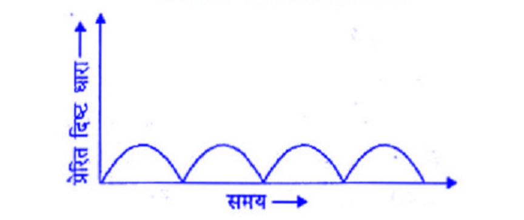
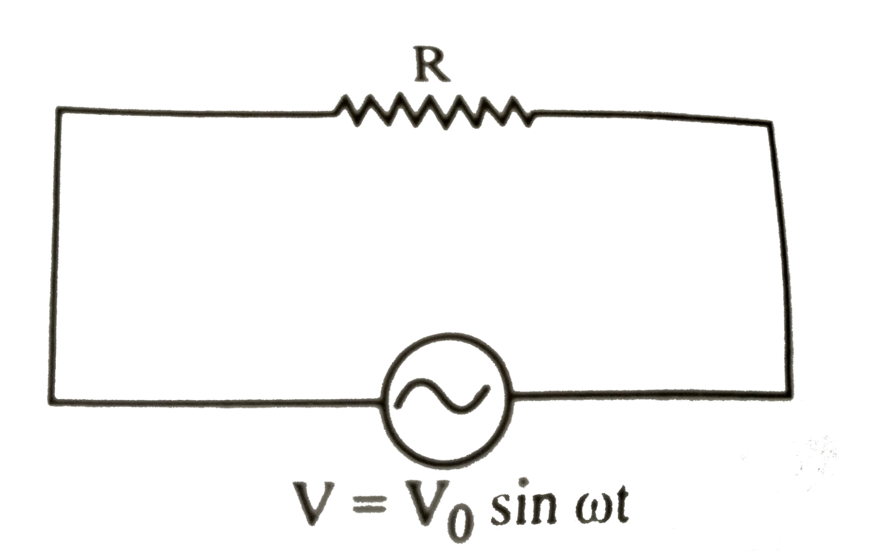
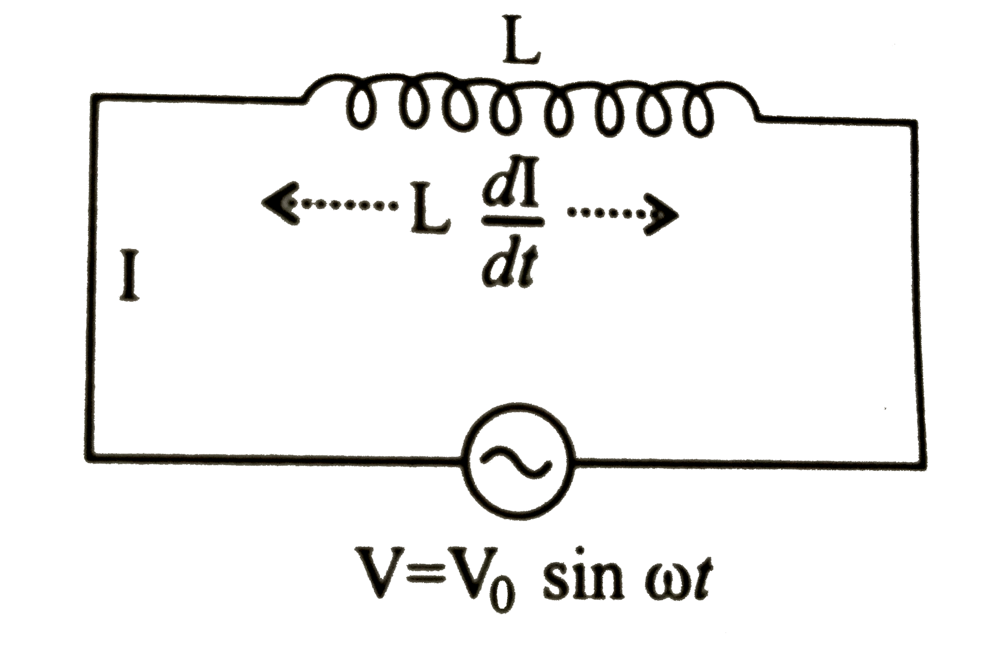
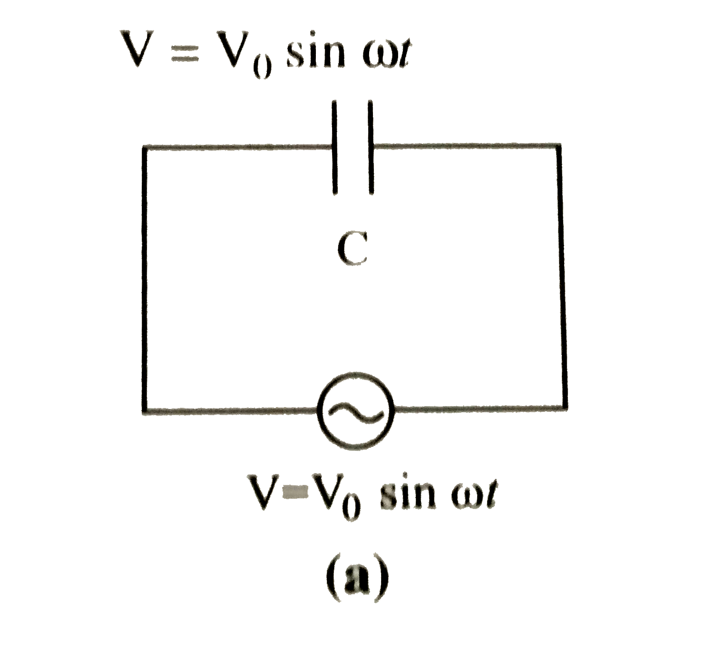
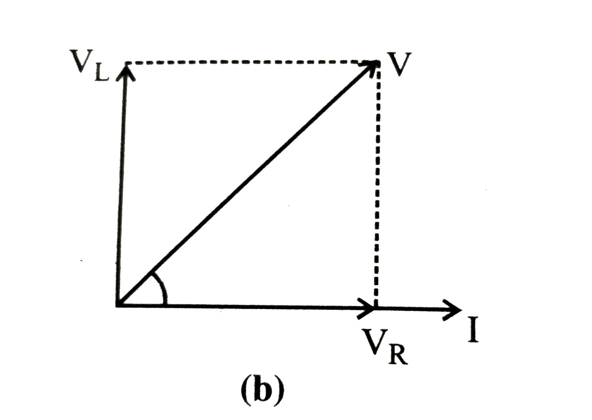
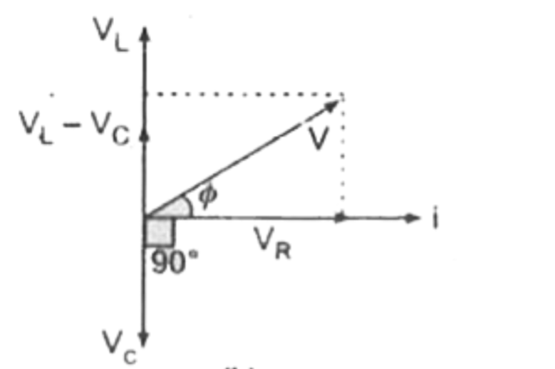
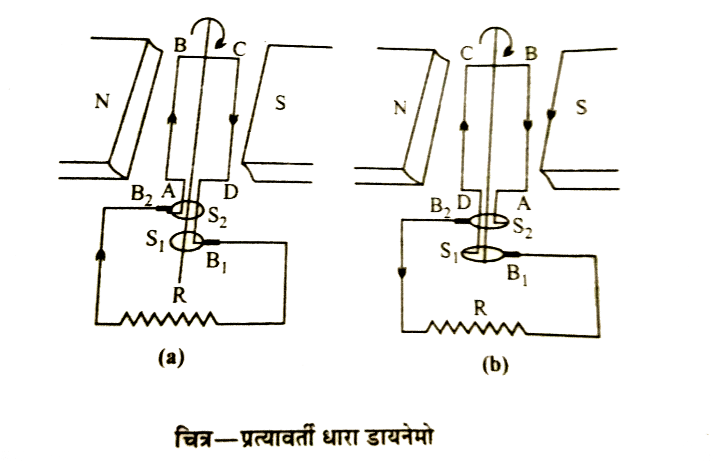

📘 Unit 4(B) - प्रत्यावर्ती धारा (Alternating Current)
प्रश्न: दिष्ट धारा किसे कहते हैं?

वह धारा जो समय के साथ अपने परिमाण और दिशा को स्थिर बनाए रखती है, उसे दिष्ट धारा कहते हैं। यह धारा हमेशा एक ही दिशा में बहती है।
उदाहरण – बैटरी, सेल, डी.सी. जनरेटर से प्राप्त धारा।
उदाहरण – बैटरी, सेल, डी.सी. जनरेटर से प्राप्त धारा।
प्रश्न: प्रत्यावर्ती धारा किसे कहते हैं?

वह धारा जो समय के साथ-साथ अपने परिमाण तथा दिशा दोनों को लगातार बदलती रहती है, उसे प्रत्यावर्ती धारा कहते हैं। यह साइन तरंग के रूप में प्रवाहित होती है। इसे निम्न समीकरण से प्रदर्शित करते हैं।
$$ I = I_0 \sin\omega t $$
उदाहरण – हमारे घरों में उपयोग होने वाली विद्युत धारा (220 V, 50 Hz)।
प्रश्न: प्रत्यावर्ती धारा के तात्क्षणिक मान, शिखर मान तथा वर्ग माध्य मूल मान किसे कहते हैं?

तात्क्षणिक मान - प्रत्यावर्ती धारा का तात्क्षणिक मान वह मान होता है, जो धारा का किसी विशेष क्षण पर होता है। एक पूर्ण चक्र में इसका औसत मान शून्य होता है। इसका मान निम्न होता है।
$$ I = I_0\sin\omega t $$
शिखर मान - प्रत्यावर्ती धारा के अधिकतम मान को उसका आयाम या शिखर मान कहते हैं। इसे \(I_0\) से प्रदर्शित करते हैं।$$ I_0 = \sqrt{2}\, I_{rms} $$
वर्ग माध्य मूल मान - प्रत्यावर्ती धारा के एक पूर्ण चक्र में धारा के तात्क्षणिक मानों के वर्गों के मध्यमान के वर्गमूल को प्रत्यावर्ती धारा का वर्ग माध्य मूल मान कहते हैं। इसे प्रत्यावर्ती धारा का आभासी मान भी कहते हैं। इसे \(I_{rms}\) से प्रदर्शित करते हैं।
प्रश्न: प्रत्यावर्ती धारा तथा दिष्ट धारा में अंतर लिखिए।
| दिष्ट धारा (DC) | प्रत्यावर्ती धारा (AC) |
|---|---|
| मान परिवर्तित हो सकता है, किंतु दिशा निश्चित रहती है। | दिशा तथा परिमाण परिवर्तित होते रहते हैं। |
| ट्रांसफार्मर प्रयुक्त नहीं कर सकते। | इसमें ट्रांसफार्मर प्रयुक्त किया जा सकता है। |
| विद्युत चुंबक बनाने में उपयोगी नहीं है। | विद्युत धारा को विद्युत चुंबक बनाने में प्रयुक्त किया जा सकता है। |
| इसके मापक यंत्र चुंबकीय प्रभाव पर आधारित होते हैं। | इसके मापक यंत्र ऊष्मीय प्रभाव पर आधारित होते हैं। |
| अपेक्षाकृत कम खतरनाक है। | खतरनाक है। |
प्रश्न: प्रत्यावर्ती धारा के चुम्बकीय और रासायनिक प्रभाव शून्य क्यों होते हैं? (Sample paper 2026)
आधे चक्र में विद्युत् धारा एक दिशा में तथा आधे चक्र में विपरीत दिशा में प्रवाहित होती है जिससे पूर्ण चक्र में धारा का औसत मान शून्य होता है। अतः प्रत्यावर्ती धारा के चुम्बकीय और रासायनिक प्रभाव शून्य होते हैं।
प्रश्न: प्रत्यावर्ती धारा का मापन चल कुण्डली धारामापी से नहीं किया जा सकता है, क्यों?
प्रत्यावर्ती धारा का एक पूर्ण चक्र में औसत मान शून्य होता है। अतः प्रत्यावर्ती धारा चुम्बकीय प्रभाव प्रदर्शित नहीं करती। जबकि चल कुण्डली धारामापी धारा के चुम्बकीय प्रभाव पर आधारित है। फलस्वरूप चल कुण्डली धारामापी की सहायता से प्रत्यावर्ती धारा का मापन नहीं किया जा सकता।
प्रश्न: प्रत्यावर्ती धारा (AC) को मापने वाले यंत्र किस सिद्धांतों पर आधारित होते हैं?
प्रत्यावर्ती धारा (AC) को मापने वाले यंत्र मुख्यतः धारा के ऊष्मीय (तापीय) सिद्धांत पर काम करते हैं।
प्रश्न: प्रत्यावर्ती धारा के वर्ग माध्य मूल मान और शिखर मान में संबंध स्थापित कीजिए।
अथवा
सिद्ध कीजिए कि धारा का वर्ग माध्य मूल मान उसके शिखर मान का \(1/\sqrt{2}\) गुना होता है।
अथवा
सिद्ध कीजिए कि धारा का वर्ग माध्य मूल मान उसके शिखर मान का \(1/\sqrt{2}\) गुना होता है।
माना किसी क्षण पर प्रत्यावर्ती धारा \(I = I_0\sin\omega t\) है।
अतः प्रत्यावर्ती धारा का वर्ग माध्य मूल मान -
अतः प्रत्यावर्ती धारा का वर्ग माध्य मूल मान -
$$ I^2_{rms} = \frac{1}{T}\int_0^T I^2\,dt $$
$$ I^2_{rms} = \frac{1}{T}\int_0^T (I_0\sin\omega t)^2\,dt $$
$$ I^2_{rms} = \frac{I_0^2}{T}\int_0^T \sin^2\omega t\,dt $$
$$ I^2_{rms} = \frac{I_0^2}{2T}\int_0^T (1-\cos2\omega t)\,dt $$
$$ I^2_{rms} = \frac{I_0^2}{2T}\Big[t-\frac{\sin2\omega t}{2\omega}\Big]_0^T $$
$$ I^2_{rms} = \frac{I_0^2}{2T}\Big[\Big(T-\frac{\sin2\omega T}{2\omega}\Big)-\Big(0-\frac{\sin0}{2\omega}\Big)\Big] $$
$$ I^2_{rms} = \frac{I_0^2}{2T}\Big[T-\frac{\sin2\omega(2\pi/\omega)}{2\omega}\Big] $$
$$ I^2_{rms} = \frac{I_0^2}{2T}\big[T-\frac{\sin4\pi}{2\omega}\big] $$
$$ I^2_{rms} = \frac{I_0^2}{2T}[T-0] $$
$$ I^2_{rms} = \frac{I_0^2}{2} $$
$$ I_{rms} = \frac{I_0}{\sqrt{2}} $$
प्रश्न: प्रत्यावर्ती धारा दिष्ट धारा से अधिक खतरनाक क्यों होती है? (2025)
अथवा
समान विभव की प्रत्यावर्ती धारा और दिष्ट धारा में से कौन अधिक सुरक्षित है और क्यों?
अथवा
समान विभव की प्रत्यावर्ती धारा और दिष्ट धारा में से कौन अधिक सुरक्षित है और क्यों?
प्रत्यावर्ती धारा में विभवान्तर लगातार बदलता रहता है। इसका आभासी (rms) मान आमतौर पर 220 वोल्ट होता है।
अतः इसका वास्तविक अधिकतम मान अर्थात शिखर मान -
जबकि दिष्ट धारा में वोल्टेज हमेशा स्थिर रहता है। यदि DC वोल्टेज 220 वोल्ट है, तो यह हमेशा 220 वोल्ट ही रहेगा।
इस प्रकार प्रत्यावर्ती धारा दिष्ट धारा से अधिक खतरनाक होती है।
अतः इसका वास्तविक अधिकतम मान अर्थात शिखर मान -
$$ I_0 = \sqrt{2}\,I_{rms} $$
$$ I_0 = 1.41(300) $$
$$ I_0 = 331\text{ वोल्ट} $$
यानी 220 वोल्ट की AC धारा का वोल्टेज वास्तव में +311 से -311 वोल्ट तक बदलता रहता है।जबकि दिष्ट धारा में वोल्टेज हमेशा स्थिर रहता है। यदि DC वोल्टेज 220 वोल्ट है, तो यह हमेशा 220 वोल्ट ही रहेगा।
इस प्रकार प्रत्यावर्ती धारा दिष्ट धारा से अधिक खतरनाक होती है।
प्रश्न: प्रत्यावर्ती वि. वा. बल का शिखर से शिखर तक का मान कितना होता है?
धनात्मक शिखर मान और ऋणात्मक शिखर मान के परिणाम के योग के मान के बराबर होता है।
अर्थात् वि.वा. बल का शिखर से शिखर तक का मान = 2E = 2√20
अर्थात् वि.वा. बल का शिखर से शिखर तक का मान = 2E = 2√20
प्रश्न: प्रतिरोध, प्रतिघात और प्रतिबाधा क्या है? समझाइए।
प्रतिरोध - किसी चालक द्वारा विद्युत धारा के मार्ग में डाले गए अवरोध को प्रतिरोध कहते हैं। इसे \(R\) से प्रदर्शित करते हैं।
प्रतिघात - प्रत्यावर्ती धारा परिपथ में केवल प्रेरक कुण्डली अथवा केवल संधारित्र के द्वारा प्रत्यावर्ती धारा के मार्ग में उत्पन्न अवरोध को प्रतिघात कहते हैं। इसे \(X\) से प्रदर्शित करते हैं।
प्रतिबाधा - प्रत्यावर्ती परिपथ में ओमीय प्रतिरोध, प्रेरक कुण्डली और संधारित्र में से दो या दो से अधिक अवयवों के द्वारा डाले गये अवरोध को प्रतिबाधा कहते हैं। इसे \(Z\) से प्रदर्शित करते हैं।
प्रतिघात - प्रत्यावर्ती धारा परिपथ में केवल प्रेरक कुण्डली अथवा केवल संधारित्र के द्वारा प्रत्यावर्ती धारा के मार्ग में उत्पन्न अवरोध को प्रतिघात कहते हैं। इसे \(X\) से प्रदर्शित करते हैं।
प्रतिबाधा - प्रत्यावर्ती परिपथ में ओमीय प्रतिरोध, प्रेरक कुण्डली और संधारित्र में से दो या दो से अधिक अवयवों के द्वारा डाले गये अवरोध को प्रतिबाधा कहते हैं। इसे \(Z\) से प्रदर्शित करते हैं।
प्रश्न: प्रतिरोध, प्रतिघात और प्रतिबाधा में अंतर लिखिए।
| प्रतिरोध | प्रतिघात | प्रतिबाधा |
|---|---|---|
| विद्युत धारा के मार्ग में डाले गए अवरोध को प्रतिरोध कहते हैं। | प्रत्यावर्ती धारा परिपथ में प्रेरक कुंडली तथा संधारित्र द्वारा धारा के मार्ग में दिए गए विरोध को प्रतिघात कहते हैं। | प्रत्यावर्ती धारा परिपथ में ओमीय प्रतिरोध, प्रेरक कुंडली और संधारित्र सभी के संयुक्त विरोध को प्रतिबाधा कहते हैं। |
| यह आवृत्ति पर निर्भर नहीं करता। | यह आवृत्ति पर निर्भर करता है। | यह आवृत्ति पर निर्भर करता है। |
| इसे R से प्रदर्शित करते हैं। | इसे X से प्रदर्शित करते हैं। | इसे Z से प्रदर्शित करते हैं। |
प्रश्न: संधारित्र दिष्ट धारा को रोकता है तथा उच्च आवृत्ति की प्रत्यावर्ती धारा को गुजारता है, क्यों? (Sample paper 2026)
दिष्ट धारा हमेशा एक ही दिशा में बहती है, इसलिए इसकी आवृत्ति शून्य \((f=0)\) होती है जिससे इसका \(X_c\) का मान अनंत हो जाता है। अतः संधारित्र दिष्ट धारा को रोकता है।
इसके विपरीत प्रत्यावर्ती धारा की आवृत्ति \((f)\) अधिक होती है, जिससे इसका \(X_c\) का मान बहुत कम हो जाता है। अतः प्रत्यावर्ती धारा संधारित्र से आसानी से गुजर जाती है।
इसके विपरीत प्रत्यावर्ती धारा की आवृत्ति \((f)\) अधिक होती है, जिससे इसका \(X_c\) का मान बहुत कम हो जाता है। अतः प्रत्यावर्ती धारा संधारित्र से आसानी से गुजर जाती है।
प्रश्न: दिष्ट धारा परिपथ में \(L\) प्रेरकत्व वाली कुण्डली का प्रतिरोध कितना होता है?
दिष्ट धारा के लिए आवृत्ति \(v=0\)
परिपथ में कुण्डली का प्रतिरोध अर्थात् प्रेरण प्रतिघात
परिपथ में कुण्डली का प्रतिरोध अर्थात् प्रेरण प्रतिघात
$$ X_c = \omega L $$
$$ X_c = 2\pi v L $$
$$ X_c = 0 $$
प्रश्न: एक प्रत्यावर्ती धारा परिपथ में केवल एक ओमीय प्रतिरोध संयोजित है। धारा के लिए व्यंजक ज्ञात कीजिए तथा धारा व वोल्टता के बीच कलांतर ज्ञात कीजिए।

माना किसी क्षण प्रतिरोध \(R\) के सिरों पर प्रत्यावर्ती वोल्टता का समीकरण निम्न है-
परिपथ का प्रभावी प्रतिरोध -
$$ V = V_0\sin\omega t \quad ...(1) $$
यदि उसी क्षण प्रतिरोध \(R\) में बहने वाली धारा का मान \(I\) हो, तो ओम के नियम \(I=V/R\) से$$ I = \frac{V_0\sin\omega t}{R} $$
$$ I = \Big(\frac{V_0}{R}\Big)\sin\omega t $$
$$ I = I_0\sin\omega t \quad ...(2) $$
जहाँ \(I_0 = V_0/R\) = प्रत्यावर्ती धारा का शिखर मान है।परिपथ का प्रभावी प्रतिरोध -
$$ R = \frac{V_0}{I_0} $$
कलांतर - समी. (1) व (2) से स्पष्ट है, कि प्रत्यावर्ती वोल्टता व धारा दोनों समान कला में हैं।
प्रश्न: एक प्रत्यावर्ती धारा परिपथ में केवल एक प्रेरकत्व संयोजित है। धारा के लिए व्यंजक ज्ञात कीजिए। परिपथ का प्रतिघात तथा धारा व वोल्टता के बीच कलांतर ज्ञात कीजिए।

माना किसी क्षण प्रेरकत्व \(L\) के सिरों पर प्रत्यावर्ती वोल्टता का समीकरण निम्न है-
प्रतिघात - परिपथ का प्रभावी प्रतिरोध
$$ V = V_0\sin\omega t \quad ...(1) $$
यदि उसी क्षण संधारित्र \(C\) की प्लेटो पर आवेश का मान \(Q\) हो, तो$$ Q = CV $$
$$ Q = C(V_0\sin\omega t) $$
$$ Q = (CV_0)\sin\omega t $$
अतः परिपथ में प्रवाहित धारा का मान$$ I = \frac{dQ}{dt} $$
$$ I = \frac{d(CV_0\sin\omega t)}{dt} $$
$$ I = CV_0\,\frac{d(\sin\omega t)}{dt} $$
$$ I = CV_0(\omega\cos\omega t) $$
$$ I = \omega C V_0\sin\Big(\omega t+\frac{\pi}{2}\Big) $$
$$ I = I_0\sin\Big(\omega t+\frac{\pi}{2}\Big) \quad ...(2) $$
जहाँ \(I_0 = \omega C V_0\) = प्रत्यावर्ती धारा का शिखर मान है।प्रतिघात - परिपथ का प्रभावी प्रतिरोध
$$ X_c = \frac{V_0}{I_0} $$
$$ X_c = \frac{V_0}{\omega C V_0} $$
$$ X_c = \frac{1}{\omega C} $$
कलांतर - समी. (1) व (2) से स्पष्ट है, कि धारा, प्रत्यावर्ती विभावांतर से \(\pi/2\) कला में पीछे होती है।
प्रश्न: एक प्रत्यावर्ती धारा परिपथ में केवल एक संधारित्र संयोजित है। धारा के लिए व्यंजक ज्ञात कीजिए। परिपथ का प्रतिघात तथा धारा व वोल्टता के बीच कलांतर ज्ञात कीजिए।

माना किसी क्षण संधारित्र \(C\) के सिरों पर प्रत्यावर्ती वोल्टता का समीकरण निम्न है-
प्रतिघात - परिपथ का प्रभावी प्रतिरोध

$$ V = V_0\sin\omega t \quad ...(1) $$
यदि उसी क्षण संधारित्र \(C\) की प्लेटो पर आवेश का मान \(Q\) हो, तो$$ Q = CV $$
$$ Q = C(V_0\sin\omega t) $$
$$ Q = (CV_0)\sin\omega t $$
अतः परिपथ में प्रवाहित धारा का मान$$ I = \frac{dQ}{dt} $$
$$ I = \frac{d(CV_0\sin\omega t)}{dt} $$
$$ I = CV_0\,\frac{d(\sin\omega t)}{dt} $$
$$ I = CV_0(\omega\cos\omega t) $$
$$ I = \omega C V_0\sin\Big(\omega t+\frac{\pi}{2}\Big) $$
$$ I = I_0\sin\Big(\omega t+\frac{\pi}{2}\Big) \quad ...(2) $$
जहाँ \(I_0 = \omega C V_0\) = प्रत्यावर्ती धारा का शिखर मान है।प्रतिघात - परिपथ का प्रभावी प्रतिरोध
$$ X_c = \frac{V_0}{I_0} $$
$$ X_c = \frac{V_0}{\omega C V_0} $$
$$ X_c = \frac{1}{\omega C} $$
कलांतर - समी. (1) व (2) से स्पष्ट है, कि धारा, प्रत्यावर्ती विभावांतर से \(\pi/2\) कला में अग्रगामी (आगे) होती है।
प्रश्न: एक RC प्रत्यावर्ती धारा परिपथ में प्रतिघात, कलांतर तथा धारा के लिए व्यंजक ज्ञात कीजिए।

माना RC परिपथ में किसी समय विभवांतर निम्न है-
संधारित्र \(C\) के सिरों पर विभवांतर \(V_C = IX_c\)
हम जानते हैं कि धारा \(I\) और \(V_R\) समान कला में होते हैं। धारा \(I\) विभवांतर \(V_C\) से \(\pi/2\) आगे रहती है। यदि \(V_R\) और \(V_C\) का परिणामी विभवांतर \(V\) हो तो पाइथागोरस प्रमेय से
यदि \(V_R\) और \(V_C\) का परिणामी विभवांतर \(V\) हो तो पाइथागोरस प्रमेय से
$$ V = V_0\sin\omega t \quad ...(1) $$
प्रतिरोध \(R\) के सिरों पर विभवांतर \(V_R = IR\)संधारित्र \(C\) के सिरों पर विभवांतर \(V_C = IX_c\)
हम जानते हैं कि धारा \(I\) और \(V_R\) समान कला में होते हैं। धारा \(I\) विभवांतर \(V_C\) से \(\pi/2\) आगे रहती है।
$$ V^2 = V_R^2 + V_C^2 $$
$$ V^2 = (IR)^2 + (IX_c)^2 $$
$$ V^2 = I^2R^2 + I^2X_c^2 $$
$$ V^2 = I^2(R^2 + X_c^2) $$
$$ \frac{V^2}{I^2} = R^2 + X_c^2 $$
$$ \frac{V}{I} = \sqrt{R^2 + X_c^2} $$
प्रतिबाधा - परिपथ का प्रभावी प्रतिरोध प्रतिबाधा कहलाता है। इसे \(Z_{RC}\) से प्रदर्शित करते हैं।$$ Z_{RC} = \frac{V}{I} $$
$$ Z_{RC} = \sqrt{R^2 + X_c^2} $$
कलांतर - कलांतर \((\theta)\) प्रत्यावर्ती धारा परिपथ में वोल्टेज और धारा के बीच का कोण है। समकोण त्रिभुज में$$ \tan\theta = \frac{\text{लंब}}{\text{आधार}} $$
$$ \tan\theta = \frac{V_c}{V_R} $$
$$ \tan\theta = \frac{IX_c}{IR} $$
$$ \tan\theta = \frac{X_c}{R} $$
$$ \theta = \tan^{-1}\Big(\frac{X_c}{R}\Big) $$
अतः परिपथ में प्रवाहित धारा निम्न होगी।$$ I = I_0\sin(\omega t+\theta) $$
जहाँ \(I_0 = V_0/Z_{RC}\) = प्रत्यावर्ती धारा का शिखर मान है।
प्रश्न: एक RL प्रत्यावर्ती धारा परिपथ में प्रतिघात, कलांतर तथा धारा के लिए व्यंजक ज्ञात कीजिए।

माना RL परिपथ में किसी समय विभवांतर निम्न है-
प्रेरकत्व \(L\) के सिरों पर विभवांतर \(V_L = IX_L\)
हम जानते हैं कि धारा \(I\) और \(V_R\) समान कला में होते हैं। धारा \(I\) विभवांतर \(V_L\) से \(\pi/2\) पीछे रहती है।यदि \(V_R\) और \(V_L\) का परिणामी विभवांतर \(V\) हो तो पाइथागोरस प्रमेय से
$$ V = V_0\sin\omega t \quad ...(1) $$
प्रतिरोध \(R\) के सिरों पर विभवांतर \(V_R = IR\)प्रेरकत्व \(L\) के सिरों पर विभवांतर \(V_L = IX_L\)
हम जानते हैं कि धारा \(I\) और \(V_R\) समान कला में होते हैं। धारा \(I\) विभवांतर \(V_L\) से \(\pi/2\) पीछे रहती है।

$$ V^2 = V_R^2 + V_L^2 $$
$$ V^2 = (IR)^2 + (IX_L)^2 $$
$$ V^2 = I^2R^2 + I^2X_L^2 $$
$$ V^2 = I^2(R^2 + X_L^2) $$
$$ \frac{V^2}{I^2} = R^2 + X_L^2 $$
$$ \frac{V}{I} = \sqrt{R^2 + X_L^2} $$
प्रतिबाधा - परिपथ का प्रभावी प्रतिरोध प्रतिबाधा कहलाता है। इसे \(Z_{RL}\) से प्रदर्शित करते हैं।$$ Z_{RL} = \frac{V}{I} $$
$$ Z_{RL} = \sqrt{R^2 + X_L^2} $$
कलांतर - कलांतर \((\theta)\) प्रत्यावर्ती धारा परिपथ में वोल्टेज और धारा के बीच का कोण है। समकोण त्रिभुज में$$ \tan\theta = \frac{\text{लंब}}{\text{आधार}} $$
$$ \tan\theta = \frac{V_L}{V_R} $$
$$ \tan\theta = \frac{IX_L}{IR} $$
$$ \tan\theta = \frac{X_L}{R} $$
$$ \theta = \tan^{-1}\Big(\frac{X_L}{R}\Big) $$
अतः परिपथ में प्रवाहित धारा निम्न होगी।$$ I = I_0\sin(\omega t-\theta) $$
जहाँ \(I_0 = V_0/Z_{RL}\) = प्रत्यावर्ती धारा का शिखर मान है।
प्रश्न: एक LC प्रत्यावर्ती धारा परिपथ में प्रतिघात, कलांतर तथा धारा के लिए व्यंजक ज्ञात कीजिए।

माना LC परिपथ में किसी समय विभवांतर निम्न है-
संधारित्र \(C\) के सिरों पर विभवांतर \(V_C = IX_c\)
हम जानते हैं कि धारा \(I\) विभवांतर \(V_L\) से \(\pi/2\) पीछे रहती है। धारा \(I\) विभवांतर \(V_C\) से \(\pi/2\) आगे रहती है।
अतः यदि \(V_L\) और \(V_C\) का परिणामी विभवांतर \(V\) हो तो पाइथागोरस प्रमेय से
$$ V = V_0\sin\omega t \quad ...(1) $$
प्रेरकत्व \(L\) के सिरों पर विभवांतर \(V_L = IX_L\)संधारित्र \(C\) के सिरों पर विभवांतर \(V_C = IX_c\)
हम जानते हैं कि धारा \(I\) विभवांतर \(V_L\) से \(\pi/2\) पीछे रहती है। धारा \(I\) विभवांतर \(V_C\) से \(\pi/2\) आगे रहती है।
अतः यदि \(V_L\) और \(V_C\) का परिणामी विभवांतर \(V\) हो तो पाइथागोरस प्रमेय से
$$ V = V_L - V_c $$
$$ V = IX_L - IX_c $$
$$ V = I(X_L - X_c) $$
$$ \frac{V}{I} = X_L - X_c $$
प्रतिबाधा - परिपथ का प्रभावी प्रतिरोध प्रतिबाधा कहलाता है। इसे \(Z_{LC}\) से प्रदर्शित करते हैं।$$ Z_{LC} = \frac{V}{I} $$
$$ Z_{LC} = X_L - X_c $$
कलांतर - कलांतर \((\theta)\) प्रत्यावर्ती धारा परिपथ में वोल्टेज और धारा के बीच का कोण है।$$ \theta = \frac{\pi}{2} $$
अतः परिपथ में प्रवाहित धारा निम्न होगी।$$ I = I_0\sin\Big(\omega t+\frac{\pi}{2}\Big) $$
जहाँ \(I_0 = V_0/Z_{LC}\) = प्रत्यावर्ती धारा का शिखर मान है।
प्रश्न: अनुनाद किसे कहते हैं? LC प्रत्यावर्ती धारा परिपथ के लिए अनुनादी आवृत्ति ज्ञात कीजिए।
अनुनाद - जब किसी प्रत्यावर्ती धारा (AC) परिपथ की प्रेरक प्रतिघात \(X_L\) और धारितीय प्रतिघात \(X_c\) का मान बराबर हो जाता है तो इसे अनुनाद कहते हैं।
अर्थात अनुनाद की स्थिति में
अनुनाद की स्थिति में
अर्थात अनुनाद की स्थिति में
- \(Z_{LC} = 0\) (न्यूनतम)
- \(X_L = X_c\)
- धारा \(I\) अधिकतम
अनुनाद की स्थिति में
$$ Z_{LC} = 0 $$
$$ X_L - X_c = 0 $$
$$ X_L = X_c $$
$$ \omega L = \frac{1}{\omega C} $$
$$ \omega^2 = \frac{1}{LC} $$
$$ \omega = \frac{1}{\sqrt{LC}} $$
$$ 2\pi f_0 = \frac{1}{\sqrt{LC}} $$
$$ f_0 = \frac{1}{2\pi\sqrt{LC}} $$
प्रश्न: Q गुणांक क्या है? इसके लिए सूत्र लिखिए तथा इसके मान को अधिक होने के लिए शर्तें लिखिए।
Q-गुणांक किसी अनुनादी परिपथ की गुणवत्ता का माप होता है। यह बताता है कि परिपथ में ऊर्जा हानि कितनी कम है और अनुनाद कितना तीक्ष्ण है।
Q-गुणांक का सूत्र
Q-गुणांक का सूत्र
$$ Q = \frac{\text{अनुनाद आवृत्ति}}{\text{बैंड चौड़ाई}} $$
Q-गुणांक अधिक होने की शर्तें- ऊर्जा हानि बहुत कम होनी चाहिए।
- प्रतिरोध कम होना चाहिए।
- अनुनाद तीक्ष्ण होना चाहिए।
- बैंडचौड़ाई कम होनी चाहिए।
- परिपथ में डैम्पिंग न्यूनतम हो।
प्रश्न: (अति महत्वपूर्ण) एक LCR प्रत्यावर्ती धारा परिपथ में प्रतिघात, कलांतर तथा धारा के लिए व्यंजक ज्ञात कीजिए।
माना LCR परिपथ में किसी समय विभवांतर निम्न है-
प्रेरकत्व \(L\) के सिरों पर विभवांतर \(V_L = IX_L\)
हम जानते हैं कि धारा \(I\) और \(V_R\) समान कला में होते हैं। धारा \(I\) विभवांतर \(V_L\) से \(\pi/2\) पीछे रहती है। धारा \(I\) विभवांतर \(V_C\) से \(\pi/2\) आगे रहती है।अतः यदि \(V_L\) और \(V_C\) का परिणामी विभवांतर \((V_L - V_C)\) होगा जिसकी दिशा वही होगी जो \(V_L\) की दिशा होती है। अब यदि \(V_R\) और \((V_L - V_C)\) का परिणामी विभवांतर \(V\) हो तो पाइथागोरस प्रमेय से
$$ V = V_0\sin\omega t \quad ...(1) $$
प्रतिरोध \(R\) के सिरों पर विभवांतर \(V_R = IR\)प्रेरकत्व \(L\) के सिरों पर विभवांतर \(V_L = IX_L\)
हम जानते हैं कि धारा \(I\) और \(V_R\) समान कला में होते हैं। धारा \(I\) विभवांतर \(V_L\) से \(\pi/2\) पीछे रहती है। धारा \(I\) विभवांतर \(V_C\) से \(\pi/2\) आगे रहती है।अतः यदि \(V_L\) और \(V_C\) का परिणामी विभवांतर \((V_L - V_C)\) होगा जिसकी दिशा वही होगी जो \(V_L\) की दिशा होती है। अब यदि \(V_R\) और \((V_L - V_C)\) का परिणामी विभवांतर \(V\) हो तो पाइथागोरस प्रमेय से
$$ V^2 = V_R^2 + (V_L - V_c)^2 $$
$$ V^2 = (IR)^2 + (IX_L - IX_c)^2 $$
$$ V^2 = I^2R^2 + I^2(X_L - X_c)^2 $$
$$ V^2 = I^2\big[R^2 + (X_L - X_c)^2\big] $$
$$ \frac{V^2}{I^2} = R^2 + (X_L - X_c)^2 $$
$$ \frac{V}{I} = \sqrt{R^2 + (X_L - X_c)^2} $$
प्रतिबाधा - परिपथ का प्रभावी प्रतिरोध प्रतिबाधा कहलाता है। इसे \(Z_{LCR}\) से प्रदर्शित करते हैं।$$ Z_{LCR} = \frac{V}{I} $$
$$ Z_{LCR} = \sqrt{R^2 + (X_L - X_c)^2} $$
कलांतर - कलांतर \((\theta)\) प्रत्यावर्ती धारा परिपथ में वोल्टेज और धारा के बीच का कोण है। समकोण त्रिभुज में$$ \tan\theta = \frac{\text{लंब}}{\text{आधार}} $$
$$ \tan\theta = \frac{V_L-V_c}{V_R} $$
$$ \tan\theta = \frac{IX_L-IX_c}{IR} $$
$$ \tan\theta = \frac{I(X_L-X_c)}{IR} $$
$$ \tan\theta = \frac{X_L-X_c}{R} $$
$$ \theta = \tan^{-1}\Big[\frac{X_L-X_c}{R}\Big] $$
अतः परिपथ में प्रवाहित धारा निम्न होगी।$$ I = I_0\sin(\omega t+\theta) $$
जहाँ \(I_0 = V_0/Z_{RL}\) = प्रत्यावर्ती धारा का शिखर मान है।
प्रश्न 19: श्रेणी अनुनादी L-C-R परिपथ में प्रतिबाधा का मान कितना होगा?
L-C-R परिपथ में प्रतिबाधा
$$ Z_{LCR} = \sqrt{R^2 + (X_L-X_c)^2} $$
अनुनादी स्थिति में$$ X_L = X_c $$
अतः परिपथ की प्रतिबाधा$$ Z_{LCR} = \sqrt{R^2 + (0)^2} $$
$$ Z_{LCR} = \sqrt{R^2} $$
$$ Z_{LCR} = R $$
अतः प्रतिबाधा, प्रतिरोध के बराबर होगी।
प्रश्न: प्रत्यावर्ती धारा परिपथ के लिए सिद्ध कीजिए कि \(P_{av} = V_{rms}I_{rms}\cos\varphi\)। (2025)
माना किसी क्षण पर प्रत्यावर्ती विभवांतर तथा प्रत्यावर्ती धारा निम्न है।
आभासी सामर्थ्य = \(V_{rms}I_{rms}\)
शक्ति गुणांक = \(\cos\varphi\)
$$ V = V_0\sin\omega t $$
$$ I = I_0\sin\omega t $$
अतः एक पूर्ण चक्र के लिए औसत शक्ति$$ P_{av} = VI $$
$$ P_{av} = [V_0\sin\omega t][I_0\sin(\omega t-\varphi)] $$
$$ P_{av} = V_0I_0\,\sin\omega t\sin(\omega t-\varphi) $$
$$ P_{av} = V_0 I_0\,\sin\omega t(\sin\omega t\cos\varphi-\cos\omega t\sin\varphi) $$
$$ P_{av} = V_0 I_0\,(\sin^2\omega t\cos\varphi-\sin\omega t\cos\omega t\sin\varphi) $$
किंतु एक पूर्ण चक्र के लिए हम जानते हैं कि$$ \overline{\sin^2\omega t} = \frac{1}{2}\ \text{और}\ \overline{\sin\omega t\cos\omega t} = 0 $$
अतः$$ P_{av} = V_0 I_0\Big[\Big(\frac{1}{2}\Big)\cos\varphi - 0\Big] $$
$$ P_{av} = V_0 I_0\Big[\frac{1}{2}\cos\varphi\Big] $$
$$ P_{av} = \Big(\frac{V_0}{\sqrt{2}}\Big)\Big(\frac{I_0}{\sqrt{2}}\Big)\cos\varphi $$
$$ P_{av} = V_{rms}\,I_{rms}\cos\varphi $$
$$ P_{av} = \text{आभासी सामर्थ्य}\times\text{शक्ति गुणांक} $$
जहाँआभासी सामर्थ्य = \(V_{rms}I_{rms}\)
शक्ति गुणांक = \(\cos\varphi\)
प्रश्न: वाटहीन धारा का क्या अर्थ है?
यदि किसी प्रत्यावर्ती धारा परिपथ में धारा तो बहती है, किन्तु औसत शक्ति व्यय का मान शून्य होता है, तो उस धारा को वाटहीन धारा कहते हैं।
प्रश्न: किस दशा में धारा वाटहीन होती है?
प्रत्यावर्ती धारा परिपथ में शुद्ध प्रेरकत्व या शुद्ध धारिता होने पर धारा वाटहीन होती है, क्योंकि इस स्थिति में धारा और वोल्टेज के बीच \(\pi/2\) का कलांतर होता है। फलस्वरूप औसत शक्ति व्यय शून्य होता है।
$$ P_{av} = V_{rms}I_{rms}\cos\varphi $$
$$ P_{av} = V_{rms}I_{rms}\cos\Big(\frac{\pi}{2}\Big) $$
$$ P_{av} = V_{rms}I_{rms}\times0 $$
$$ P_{av} = 0 $$
प्रश्न: चोक कुण्डली का सिद्धान्त क्या है? धारा नियन्त्रण हेतु इसके उपयोग को समझाइये।

सिद्धान्त - प्रत्यावर्ती धारा परिपथ में धारा के मान को नियन्त्रित करने के लिए अति निम्न प्रतिरोध तथा उच्च प्रेरकत्व की एक कुण्डली उपयोग में लाते हैं। इससे परिपथ में अति न्यून ऊर्जा क्षय होती है। इस कुण्डली को ही चोक कुण्डली कहते हैं।
यदि किसी प्रत्यावर्ती धारा परिपथ में केवल शुद्ध प्रेरकत्व हो तथा नर्म लोहे के क्रोड का प्रतिरोध शून्य हो, तो विद्युत् वाहक बल और धारा में \(90^\circ\) का कलांतर होता है। इस स्थिति में परिपथ की औसत शक्ति
संरचना - चोक कुण्डली ताँबे के विद्युतरोधी मोटे तार के अनेक फेरे नर्म लोहे के क्रोड पर लपेटकर बनाई जाती है।
उपयोग - प्रत्यावर्ती धारा परिपथ में चोक कुण्डली लगाकर प्रत्यावर्ती धारा के मान को नियन्त्रित किया जाता है। कुण्डली का प्रतिघात \(X_L = \omega L\) अतः यदि चोक कुण्डली का प्रेरकत्व अधिक है तो धारा का मान कम हो जाता है तथा यदि प्रेरकत्व कम है, तो धारा का मान बढ़ जाता है। इस प्रक्रिया में विद्युत् ऊर्जा का ऊष्मीय ऊर्जा में अपव्यय नगण्य होता है।
यदि किसी प्रत्यावर्ती धारा परिपथ में केवल शुद्ध प्रेरकत्व हो तथा नर्म लोहे के क्रोड का प्रतिरोध शून्य हो, तो विद्युत् वाहक बल और धारा में \(90^\circ\) का कलांतर होता है। इस स्थिति में परिपथ की औसत शक्ति
$$ P_{av} = V_{rms}I_{rms}\cos\varphi $$
$$ P_{av} = V_{rms}I_{rms}\cos\Big(\frac{\pi}{2}\Big) $$
$$ P_{av} = V_{rms}I_{rms}\times0 $$
$$ P_{av} = 0 $$
अतः ऊर्जा का बिल्कुल अपव्यय नहीं होता, लेकिन व्यवहार में प्रतिरोध शून्य नहीं हो सकता। अतः विद्युत् ऊर्जा के कुछ भाग का ऊष्मीय ऊर्जा में अपव्यय होता रहता है।संरचना - चोक कुण्डली ताँबे के विद्युतरोधी मोटे तार के अनेक फेरे नर्म लोहे के क्रोड पर लपेटकर बनाई जाती है।
उपयोग - प्रत्यावर्ती धारा परिपथ में चोक कुण्डली लगाकर प्रत्यावर्ती धारा के मान को नियन्त्रित किया जाता है। कुण्डली का प्रतिघात \(X_L = \omega L\) अतः यदि चोक कुण्डली का प्रेरकत्व अधिक है तो धारा का मान कम हो जाता है तथा यदि प्रेरकत्व कम है, तो धारा का मान बढ़ जाता है। इस प्रक्रिया में विद्युत् ऊर्जा का ऊष्मीय ऊर्जा में अपव्यय नगण्य होता है।
प्रश्न: चोक कुण्डली में बहने वाली धारा को वाटहीन धारा क्यों कहते हैं? (2018)
चोक कुण्डली ताँबे के तार की बनी होती है, जिसका प्रतिरोध नगण्य होता है। पुनः धारा और वोल्टेज के बीच \(\pi/2\) का कलांतर होने के कारण औसत शक्ति व्यय शून्य होती है। अतः चोक कुण्डली में बहने वाली धारा वाटहीन धारा होती है।
प्रश्न: प्रत्यावर्ती धारा का मान घटाने के लिए प्रतिरोध की अपेक्षा प्रेरकत्व अधिक उपयुक्त क्यों है?
प्रत्यावर्ती धारा के मान को घटाने के लिए प्रतिरोध का उपयोग करने पर विद्युत् ऊर्जा के कुछ भाग का ऊष्मीय ऊर्जा में अपव्यय हो जाता है, जबकि प्रेरकत्व का उपयोग करने पर उसका शक्ति गुणांक शून्य होने के कारण ऊर्जा का बिल्कुल अपव्यय नहीं होता।
प्रश्न: ट्रांसफॉर्मर किसे कहते हैं? ट्रान्सफॉर्मर के प्रकार, रचना, सिद्धान्त तथा कार्यविधि समझाइये। (2021/23/Sample paper 2026)
ट्रांसफॉर्मर वह उपकरण है जो प्रत्यावर्ती विभवांतर को बढ़ाने या घटाने का कार्य करता है, परंतु इसकी आवृत्ति तथा शक्ति समान रहती है।
प्रकार - यह दो प्रकार का होता है। ट्रांसफॉर्मर की रचना - ट्रान्सफॉर्मर के मुख्य तीन भाग होते हैं।
ट्रांसफॉर्मर की रचना - ट्रान्सफॉर्मर के मुख्य तीन भाग होते हैं।
कार्य विधि एवं सूत्र स्थापना - माना कि प्राथमिक एवं द्वितीयक कुण्डलियों में फेरों की संख्या क्रमशः \(N_p\) और \(N_s\) हैं। यदि किसी क्षण प्राथमिक कुण्डली से बद्ध चुम्बकीय फ्लक्स \(\phi\) हो, तो उसमें प्रेरित वि. वा. बल
प्रकार - यह दो प्रकार का होता है।
- स्टेप-अप ट्रांसफॉर्मर - यह निम्न विभवांतर को उच्च विभवांतर में बदलता है। इसमें द्वितीयक कुण्डली के चक्कर प्राथमिक से अधिक होते हैं।
उदाहरण – पावर स्टेशन में वोल्टता को बहुत अधिक (11 kV → 220 kV) करने के लिए। - स्टेप-डाउन ट्रांसफॉर्मर - यह उच्च विभवांतर को निम्न विभवांतर में बदलता है। इसमें द्वितीयक कुण्डली के चक्कर प्राथमिक से कम होते हैं।
उदाहरण – 220 V AC को 12 V या 6 V में बदलना (घरेलू उपकरणों में उपयोग)।
- लौह क्रोड - मुलायम पटलित लोहे की चादरों से बनी होती है। प्राथमिक तथा द्वितीयक कॉइल इन्हीं पर लपेटी जाती हैं।
- प्राथमिक कुण्डली - यह विद्युत स्रोत (AC सप्लाई) से जुड़ी रहती है।
- द्वितीयक कुण्डली - यह परिपथ से जुड़ी होती है जहाँ बढ़ा या घटा हुआ विभवांतर प्राप्त होता है।
कार्य विधि एवं सूत्र स्थापना - माना कि प्राथमिक एवं द्वितीयक कुण्डलियों में फेरों की संख्या क्रमशः \(N_p\) और \(N_s\) हैं। यदि किसी क्षण प्राथमिक कुण्डली से बद्ध चुम्बकीय फ्लक्स \(\phi\) हो, तो उसमें प्रेरित वि. वा. बल
$$ e_p = -N_p\frac{d\phi}{dt} \quad ...(1) $$
यदि चुम्बकीय फ्लक्स में क्षरण न हो रहा हो, तो द्वितीयक कुण्डली से बद्ध चुम्बकीय फ्लक्स भी \(\phi\) होगा। अतः द्वितीयक कुण्डली में प्रेरित वि. वा. बल$$ e_s = -N_s\frac{d\phi}{dt} \quad ...(2) $$
समीकरण (1) में (2) का भाग देने पर-$$ \frac{e_s}{e_p} = \frac{N_s}{N_p} \quad ...(3) $$
साथ ही हम जानते हैं कि एक आदर्श ट्रांसफार्मर के लिए इनपुट पावर = आउटपुट पावर$$ e_sI_s = e_pI_p $$
$$ \frac{e_s}{e_p} = \frac{I_p}{I_s} \quad ...(4) $$
समीकरण (3) व (4) से-$$ \frac{e_s}{e_p} = \frac{N_s}{N_p} = \frac{I_p}{I_s} = r $$
जहाँ \(r\) परिणमन गुणांक है। यही ट्रांसफार्मर का सिद्धांत है। (2023/26, 2021/23/Sample paper 2026)
प्रश्न: ट्रांसफॉर्मर में ऊर्जा क्षय के विभिन्न कारण तथा उन्हें कम करने के उपाय लिखिए। (2023/26)
यद्यपि ट्रांसफॉर्मर की दक्षता बहुत अधिक होती है (95%–99%), फिर भी इसमें कुछ ऊर्जा हानि होती है। इन हानियों को मिलाकर ऊर्जा क्षय कहा जाता है।
1. ताँबे की हानि - प्राथमिक तथा द्वितीयक कुण्डलियों के ताँबे के तारों में प्रतिरोध के कारण धारा प्रवाहित होने पर ऊष्मा उत्पन्न होती है। यह हानि \(I^2R\) हानि कहलाती है।
2. लौह हानि - लौह क्रोड में प्रत्यावर्ती फ्लक्स के कारण यह हानि होती है। इसके दो प्रकार हैं –
(i) हिस्टैरिसिस हानि – लौह क्रोड में चुंबकीय अणुओं के बार-बार पुनर्विन्यास से।
(ii) भंवर धारा हानि – क्रोड में बदलते फ्लक्स से प्रेरित धारा के कारण ऊष्मा उत्पन्न होती है।
3. लीकेज फ्लक्स हानि - कुछ चुंबकीय फ्लक्स क्रोड के बाहर से गुजरता है और द्वितीयक कुण्डली को नहीं जोड़ पाता। इससे ट्रांसफॉर्मर की दक्षता घटती है।
ऊर्जा क्षय को कम करने के उपाय
1. ताँबे की हानि - प्राथमिक तथा द्वितीयक कुण्डलियों के ताँबे के तारों में प्रतिरोध के कारण धारा प्रवाहित होने पर ऊष्मा उत्पन्न होती है। यह हानि \(I^2R\) हानि कहलाती है।
2. लौह हानि - लौह क्रोड में प्रत्यावर्ती फ्लक्स के कारण यह हानि होती है। इसके दो प्रकार हैं –
(i) हिस्टैरिसिस हानि – लौह क्रोड में चुंबकीय अणुओं के बार-बार पुनर्विन्यास से।
(ii) भंवर धारा हानि – क्रोड में बदलते फ्लक्स से प्रेरित धारा के कारण ऊष्मा उत्पन्न होती है।
3. लीकेज फ्लक्स हानि - कुछ चुंबकीय फ्लक्स क्रोड के बाहर से गुजरता है और द्वितीयक कुण्डली को नहीं जोड़ पाता। इससे ट्रांसफॉर्मर की दक्षता घटती है।
ऊर्जा क्षय को कम करने के उपाय
- ताँबे के कम प्रतिरोध वाले मोटे तारों का प्रयोग।
- क्रोड को पतली पटलित (Laminated) चादरों से बनाना।
- अच्छी गुणवत्ता के लौह पदार्थ का उपयोग।
- डिजाइन ऐसा हो कि लीकेज फ्लक्स न्यूनतम हो।
प्रश्न: ट्रान्सफॉर्मर में भँवर धाराओं का प्रभाव किस प्रकार कम किया जाता है?
अथवा
ट्रान्सफॉर्मर के क्रोड पटलित बनाये जाते हैं। क्यों? (2025)
अथवा
ट्रान्सफॉर्मर के क्रोड पटलित बनाये जाते हैं। क्यों? (2025)
ट्रान्सफॉर्मर के क्रोड को पटलित बनाकर भँवर धाराओं के प्रभाव को कम किया जाता है। क्रोड के पटलित होने से उसका प्रतिरोध बहुत अधिक हो जाता है। अतः उत्पन्न भँवर धाराओं की प्रबलता बहुत कम हो जाती है। इस प्रकार विद्युत् ऊर्जा का ऊष्मीय ऊर्जा में अपव्यय नहीं हो पाता।
प्रश्न: ट्रांसफॉर्मर के क्रोड पटलित कैसे बनाया जाता है?
ट्रांसफॉर्मर के क्रोड को एकसमान लोहे के टुकड़े की बजाय पतली-पतली लोहे की चादरों से बनाया जाता है।
नर्म लोहे की बनी कई आयताकार पट्टियाँ लेते हैं। इनके बीच का आयताकार भाग काटकर अलग कर दिया जाता है। इन पट्टियों को विद्युत्-रोधी पदार्थ की तह देकर तथा इन्हें जोड़कर आवश्यक मोटाई का बना लेते हैं। यह पटलित क्रोड कहलाता है।
नर्म लोहे की बनी कई आयताकार पट्टियाँ लेते हैं। इनके बीच का आयताकार भाग काटकर अलग कर दिया जाता है। इन पट्टियों को विद्युत्-रोधी पदार्थ की तह देकर तथा इन्हें जोड़कर आवश्यक मोटाई का बना लेते हैं। यह पटलित क्रोड कहलाता है।
प्रश्न: ट्रांसफार्मर के उपयोग लिखिए।
ट्रांसफार्मर का उपयोग उन विद्युत उपकरणों में किया जाता है जो मुख्य आपूर्ति से प्राप्त वोल्टेज के अलावा किसी अन्य वोल्टेज पर संचालित होते हैं।
- स्टेप-अप ट्रांसफार्मर का उपयोग जनरेटिंग स्टेशन पर विद्युत संचरण में किया जाता है। स्टेप-अप ट्रांसफार्मर का उपयोग टेलीविजन, वायरलेस उपकरणों और एक्स-रे ट्यूबों में भी उच्च त्वरक वोल्टेज प्रदान करने के लिए किया जाता है।
- स्टेप-डाउन ट्रांसफार्मर का उपयोग विद्युत घंटियों में, रेडियो-सेटों में वाल्व हीटरों में, रात्रि लैंपों के साथ (220 वोल्ट को 6 वोल्ट तक कम करने के लिए), वेल्डिंग प्रयोजनों में तथा विद्युत उप-स्टेशनों में उपभोक्ताओं को वितरण से पहले वोल्टेज को कम करने के लिए किया जाता है।
प्रश्न: उच्चायी और अपचायी ट्रान्सफॉर्मर में अंतर लिखिए।
| उच्चायी ट्रान्सफॉर्मर | अपचायी ट्रान्सफॉर्मर |
|---|---|
| यह प्रत्यावर्ती विभवान्तर को बढ़ा देता है। | यह प्रत्यावर्ती विभवान्तर को घटा देता है। |
| यह धारा की प्रबलता को घटा देता है। | यह धारा की प्रबलता को बढ़ा देता है। |
| इसकी द्वितीयक कुंडली में फेरों की संख्या प्राथमिक कुंडली से अधिक होती है। | इसकी द्वितीयक कुंडली में फेरों की संख्या प्राथमिक कुंडली से कम होती है। |
| इसका परिणमन अनुपात 1 से अधिक होता है। | इसका परिणमन अनुपात 1 से कम होता है। |
प्रश्न: डायनेमो (जनरेटर) क्या है? इसका सिद्धांत लिखिए। (2022)
वह युक्ति जिसकी सहायता से यांत्रिक ऊर्जा को विद्युत ऊर्जा में परिवर्तित किया जाता है, डायनेमो कहलाता है।
डायनमो निम्न दो प्रकार का होता है।
डायनमो निम्न दो प्रकार का होता है।
- AC डायनमो - यह यांत्रिक कार्य को विद्युत ऊर्जा में प्रत्यावर्ती धारा के रूप में परिवर्तित करता है।
- DC डायनमो - यह यांत्रिक कार्य को विद्युत ऊर्जा में दिष्ट धारा के रूप में परिवर्तित करता है।
प्रश्न: AC डायनेमो किसे कहते हैं? इसकी रचना तथा कार्य विधि लिखिए।

वह डायनेमो जो यांत्रिक कार्य को प्रत्यावर्ती धारा के रूप में विद्युत ऊर्जा में परिवर्तित करता है, AC डायनेमो कहलाता है। इसका कार्य विद्युत चुम्बकीय प्रेरण पर आधारित है।
संरचना - AC डायनेमो में निम्नलिखित भाग होते हैं:
मान लीजिए आर्मेचर वामावर्त दिशा में घूम रहा है और किसी क्षण उसकी भुजा AB ऊपर की ओर तथा CD नीचे की ओर जा रही है। तब धारा की दिशा DCBA होगी और बाह्य परिपथ में धारा \(B_1\) से \(B_2\) की ओर प्रवाहित होगी।
आधे चक्र के बाद भुजाओं की स्थिति बदल जाती है। अब CD ऊपर की ओर और AB नीचे की ओर जाती है। इस समय धारा की दिशा ABCD होगी और बाह्य परिपथ में धारा \(B_2\) से \(B_1\) की ओर प्रवाहित होगी।
परिणामस्वरूप बाह्य परिपथ में जो धारा प्रवाहित होती है वह प्रत्यावर्ती धारा होती है, जिसे समीकरण \(I=I_0\sin\omega t\) द्वारा व्यक्त किया जाता है।
संरचना - AC डायनेमो में निम्नलिखित भाग होते हैं:
- क्षेत्र चुंबक : यह घोड़े की नाल के आकार का स्थायी चुंबक होता है, जो चुंबकीय क्षेत्र उत्पन्न करता है।
- आर्मेचर : यह तांबे की तारों की बनी आयताकार कुंडली होती है, जो लोहे के कोर पर लिपटी होती है और चुंबकीय क्षेत्र में स्वतंत्र रूप से घूम सकती है।
- पूर्ण वलय : आर्मेचर की सिरों से जुड़े दो पूर्ण वलय \(S_1\) और \(S_2\) धारा की दिशा को प्रत्येक आधे चक्र के बाद उलट देते हैं, जिससे बाह्य प्रतिरोध \(R\) में दोनों दिशाओं में धारा प्राप्त होती है।
- ब्रश : लचीले धातु के टुकड़े \(B_1\) और \(B_2\) जो पूर्ण वलय से संपर्क बनाए रखते हैं और बाह्य प्रतिरोध \(R\) से जुड़े होते हैं।
मान लीजिए आर्मेचर वामावर्त दिशा में घूम रहा है और किसी क्षण उसकी भुजा AB ऊपर की ओर तथा CD नीचे की ओर जा रही है। तब धारा की दिशा DCBA होगी और बाह्य परिपथ में धारा \(B_1\) से \(B_2\) की ओर प्रवाहित होगी।
आधे चक्र के बाद भुजाओं की स्थिति बदल जाती है। अब CD ऊपर की ओर और AB नीचे की ओर जाती है। इस समय धारा की दिशा ABCD होगी और बाह्य परिपथ में धारा \(B_2\) से \(B_1\) की ओर प्रवाहित होगी।
परिणामस्वरूप बाह्य परिपथ में जो धारा प्रवाहित होती है वह प्रत्यावर्ती धारा होती है, जिसे समीकरण \(I=I_0\sin\omega t\) द्वारा व्यक्त किया जाता है।
प्रश्न: DC डायनेमो किसे कहते हैं? इसकी रचना तथा कार्य विधि लिखिए।

वह डायनेमो जो यांत्रिक कार्य को दिष्ट धारा के रूप में विद्युत ऊर्जा में परिवर्तित करता है, DC डायनेमो कहलाता है। इसका कार्य विद्युत चुम्बकीय प्रेरण पर आधारित है।
संरचना - DC डायनेमो में निम्नलिखित भाग होते हैं:
मान लीजिए आर्मेचर वामावर्त दिशा में घूम रहा है और किसी क्षण उसकी भुजा AB ऊपर की ओर तथा CD नीचे की ओर जा रही है। तब धारा की दिशा DCBA होगी और बाह्य परिपथ में धारा \(B_1\) से \(B_2\) की ओर प्रवाहित होगी।
आधे चक्र के बाद भुजाओं की स्थिति बदल जाती है। अब CD ऊपर की ओर और AB नीचे की ओर जाती है। इस समय धारा की दिशा ABCD होगी और बाह्य परिपथ में धारा \(B_1\) से \(B_2\) की ओर प्रवाहित होगी।
परिणामस्वरूप बाह्य परिपथ में जो धारा प्रवाहित होती है वह दिष्ट धारा होती है।
संरचना - DC डायनेमो में निम्नलिखित भाग होते हैं:
- क्षेत्र चुंबक : यह घोड़े की नाल के आकार का स्थायी चुंबक होता है, जो चुंबकीय क्षेत्र उत्पन्न करता है।
- आर्मेचर : यह तांबे की तारों की बनी आयताकार कुंडली होती है, जो लोहे के कोर पर लिपटी होती है और चुंबकीय क्षेत्र में स्वतंत्र रूप से घूम सकती है।
- अर्द्ध वलय : आर्मेचर की सिरों से जुड़े दो अर्द्ध वलय \(C_1\) और \(C_2\) धारा की दिशा को प्रत्येक आधे चक्र के बाद एक ही दिशा में बनाए रखते हैं, जिससे बाह्य प्रतिरोध \(R\) में एक ही दिशा में धारा प्राप्त होती है।
- ब्रश : लचीले धातु के टुकड़े \(B_1\) और \(B_2\) जो अर्द्ध वलय से संपर्क बनाए रखते हैं और बाह्य प्रतिरोध \(R\) से जुड़े होते हैं।
मान लीजिए आर्मेचर वामावर्त दिशा में घूम रहा है और किसी क्षण उसकी भुजा AB ऊपर की ओर तथा CD नीचे की ओर जा रही है। तब धारा की दिशा DCBA होगी और बाह्य परिपथ में धारा \(B_1\) से \(B_2\) की ओर प्रवाहित होगी।
आधे चक्र के बाद भुजाओं की स्थिति बदल जाती है। अब CD ऊपर की ओर और AB नीचे की ओर जाती है। इस समय धारा की दिशा ABCD होगी और बाह्य परिपथ में धारा \(B_1\) से \(B_2\) की ओर प्रवाहित होगी।
परिणामस्वरूप बाह्य परिपथ में जो धारा प्रवाहित होती है वह दिष्ट धारा होती है।
प्रश्न: AC डायनेमो और DC डायनेमो में अंतर लिखिए।
| क्र.सं. | AC डायनेमो (परिवर्ती धारा जनित्र) | DC डायनेमो (दिष्ट धारा जनित्र) |
|---|---|---|
| 1. | यह परिवर्ती धारा (AC) उत्पन्न करता है। | यह दिष्ट धारा (DC) उत्पन्न करता है। |
| 2. | इसमें स्लिप रिंग का उपयोग होता है। | इसमें अर्द्ध वलय का उपयोग होता है। |
| 3. | धारा की दिशा समय-समय पर बदलती रहती है। | धारा की दिशा हमेशा एक ही रहती है। |
| 4. | निर्माण सरल होता है। | निर्माण अपेक्षाकृत जटिल होता है। |
| 5. | इसे बिजली घरों में बड़ी मात्रा में विद्युत उत्पादन हेतु प्रयोग किया जाता है। | इसे बैटरियों की चार्जिंग, विद्युत मोटरों आदि में प्रयोग किया जाता है। |
प्रश्न: DC मोटर किसे कहते हैं? इसकी रचना तथा कार्यविधि लिखिए।

वह यंत्र जो विद्युत ऊर्जा को यांत्रिक ऊर्जा में परिवर्तित करता है, DC मोटर (दिष्ट धारा मोटर) कहलाता है। यह विद्युत चुम्बकीय बल के सिद्धांत पर आधारित है।
संरचना - DC मोटर के मुख्य भाग निम्नलिखित हैं –
बाएँ और दाएँ भुजाओं पर लगने वाले बल विपरीत दिशाओं में होते हैं, जिससे आर्मेचर घूमने लगता है। प्रत्येक आधे चक्र के बाद अर्द्ध वलय धारा की दिशा बदल देता है ताकि आर्मेचर सदैव एक ही दिशा में घूमता रहे। इस प्रकार विद्युत ऊर्जा यांत्रिक घूर्णन ऊर्जा में बदल जाती है।
संरचना - DC मोटर के मुख्य भाग निम्नलिखित हैं –
- क्षेत्र चुंबक : यह घोड़े की नाल के आकार का स्थायी चुंबक होता है, जो चुंबकीय क्षेत्र उत्पन्न करता है।
- आर्मेचर : यह तांबे की तारों की बनी आयताकार कुंडली होती है, जो लोहे के कोर पर लिपटी होती है और चुंबकीय क्षेत्र में स्वतंत्र रूप से घूम सकती है।
- अर्द्ध वलय : आर्मेचर की सिरों से जुड़े दो अर्द्ध वलय \(C_1\) और \(C_2\) धारा की दिशा को प्रत्येक आधे चक्र के बाद उलट देते हैं, जिससे आर्मेचर लगातार एक ही दिशा में घूमता रहता है।
- ब्रश : लचीले धातु के टुकड़े \(B_1\) और \(B_2\) जो अर्द्ध वलय से संपर्क बनाए रखते हैं और बाह्य परिपथ से विद्युत धारा प्रवाहित करते हैं।
बाएँ और दाएँ भुजाओं पर लगने वाले बल विपरीत दिशाओं में होते हैं, जिससे आर्मेचर घूमने लगता है। प्रत्येक आधे चक्र के बाद अर्द्ध वलय धारा की दिशा बदल देता है ताकि आर्मेचर सदैव एक ही दिशा में घूमता रहे। इस प्रकार विद्युत ऊर्जा यांत्रिक घूर्णन ऊर्जा में बदल जाती है।
प्रश्न: DC डायनेमो और DC मोटर में अंतर लिखिए।
| क्र.सं. | DC डायनेमो (विद्युत जनित्र) | DC मोटर (विद्युत मोटर) |
|---|---|---|
| 1. | यह यांत्रिक ऊर्जा को विद्युत ऊर्जा में परिवर्तित करता है। | यह विद्युत ऊर्जा को यांत्रिक ऊर्जा में परिवर्तित करता है। |
| 2. | इसका कार्य सिद्धांत विद्युत चुंबकीय प्रेरण पर आधारित है। | इसका कार्य सिद्धांत चुंबकीय बल पर आधारित है। |
| 3. | इसमें आर्मेचर को बाहरी यांत्रिक बल से घुमाया जाता है। | इसमें आर्मेचर धारा प्रवाह के कारण स्वयं घूमता है। |
| 4. | यह धारा उत्पन्न करता है। | यह कार्य करती है या घूर्णन उत्पन्न करती है। |
| 5. | इसका उपयोग बिजली उत्पादन के लिए किया जाता है। | इसका उपयोग पंखों, खिलौनों, मशीनों आदि को चलाने के लिए किया जाता है। |
15 बहुविकल्पीय प्रश्न (MCQs)
- प्रत्यावर्ती धारा की आवृत्ति भारत में कितनी होती है?
उत्तर: 50 हर्ट्ज - प्रत्यावर्ती धारा की इकाई क्या है?
उत्तर: हर्ट्ज (Hz) - प्रत्यावर्ती धारा का औसत मान किस समयांतराल के लिए शून्य होता है?
उत्तर: एक पूर्ण चक्र के लिए - प्रत्यावर्ती धारा को मापने के लिए कौन-सा यंत्र प्रयोग किया जाता है?
उत्तर: ए.सी. एमीटर - दिष्ट धारा को प्रत्यावर्ती धारा में बदलने वाला यंत्र क्या कहलाता है?
उत्तर: इन्वर्टर - प्रत्यावर्ती धारा का RMS मान क्या होता है?
उत्तर: अधिकतम मान का 1/√2 गुणा - विद्युत शक्ति का औसत मान किससे दिया जाता है?
उत्तर: \(P = V_{rms}I_{rms}\cos\phi\) - पावर फैक्टर का मान किस सीमा में होता है?
उत्तर: 0 से 1 के बीच - LCR परिपथ में यदि रिएक्टेंस शून्य हो, तो परिपथ की स्थिति क्या कहलाती है?
उत्तर: अनुनाद (Resonance) - एक आदर्श प्रेरक कुंडली में धारा और विभवान्तर के बीच कोण कितना होता है?
उत्तर: 90° - एक शुद्ध धारित्र में धारा और विभवान्तर के बीच कोण कितना होता है?
उत्तर: 90° - प्रत्यावर्ती धारा की शक्ति अधिकतम कब होती है?
उत्तर: जब φ = 0° (धारा और विभवान्तर समान फेज में हों) - प्रत्यावर्ती वोल्टता की तात्क्षणिक समीकरण क्या है?
उत्तर: \(E = E_0\sin\omega t\) - ट्रांसफॉर्मर किस सिद्धांत पर कार्य करता है?
उत्तर: विद्युत चुंबकीय प्रेरण के सिद्धांत पर - प्रत्यावर्ती धारा की दिशा कितनी बार बदलती है?
उत्तर: प्रत्येक चक्र में दो बार
रिक्त स्थान भरिए
- प्रत्यावर्ती धारा समय के साथ __________ बदलती रहती है।
उत्तर: दिशा और परिमाण - प्रत्यावर्ती धारा की एक पूर्ण तरंग को __________ कहते हैं।
उत्तर: चक्र - प्रत्यावर्ती धारा का आभासी मान उसके शिखर मान का __________ होता है।
उत्तर: 1/√2 - जब φ = 90°, तब परिपथ में शक्ति का मान __________ होता है।
उत्तर: शून्य - ट्रांसफॉर्मर का कार्य सिद्धांत __________ पर आधारित है।
उत्तर: विद्युत चुंबकीय प्रेरण
सही जोड़ियाँ बनाइए
| A | B |
|---|---|
| 1. प्रेरक कुंडली | (c) धारा विभवान्तर से 90° पीछे रहती है |
| 2. धारित्र | (a) धारा विभवान्तर से 90° आगे रहती है |
| 3. अनुनाद स्थिति | (d) प्रेरक एवं धारित्र रिएक्टेंस समान |
| 4. पावर फैक्टर | (b) cosφ |
| 5. ट्रांसफॉर्मर | (e) प्रत्यावर्ती वोल्टेज बढ़ाने या घटाने हेतु |
सही उत्तर क्रम: 1-c, 2-a, 3-d, 4-b, 5-e
सही या गलत बताइए
- प्रत्यावर्ती धारा का औसत मान हमेशा शून्य होता है। – गलत
- ट्रांसफॉर्मर दिष्ट धारा पर कार्य करता है। – गलत
- प्रेरक कुंडली में धारा विभवान्तर से पीछे रहती है। – सही
- अनुनाद की स्थिति में परिपथ की प्रतिबाधा न्यूनतम होती है। – सही
- पावर फैक्टर जितना अधिक होगा, शक्ति हानि उतनी ही कम होगी। – सही